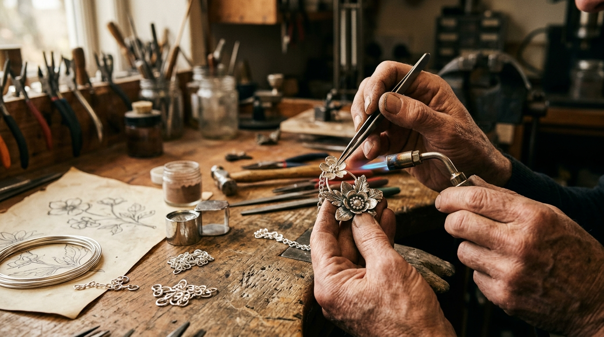
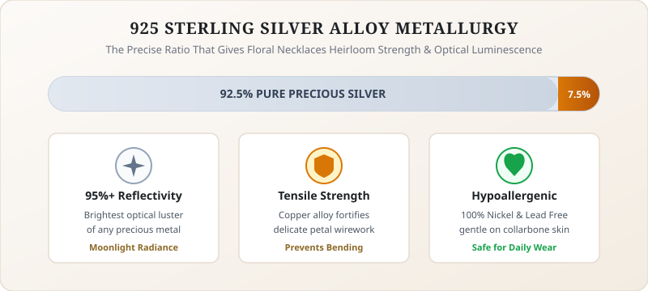
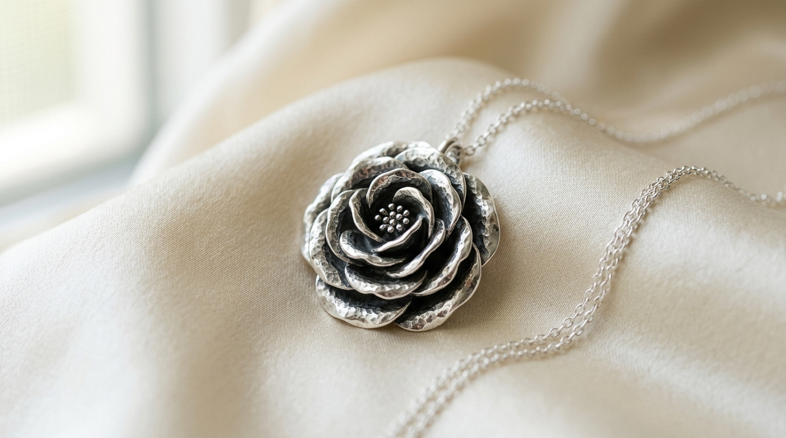
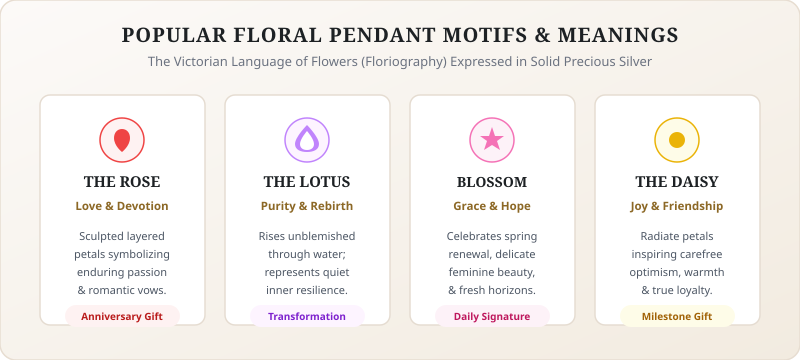
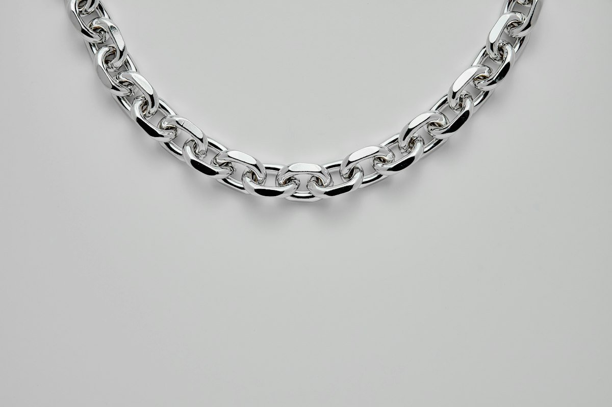
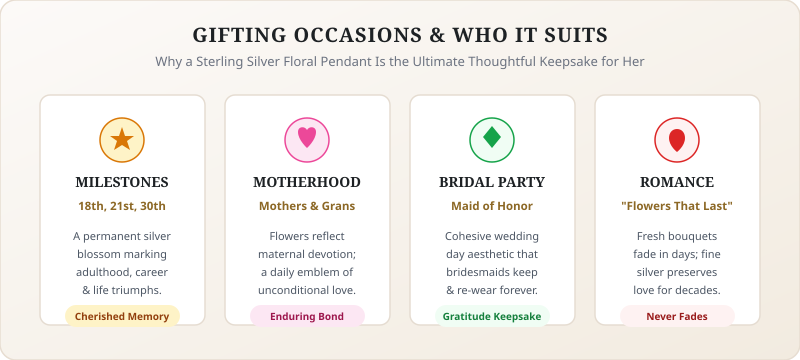
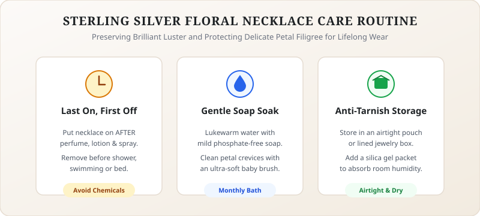
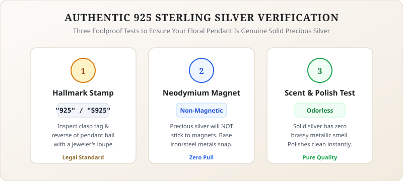
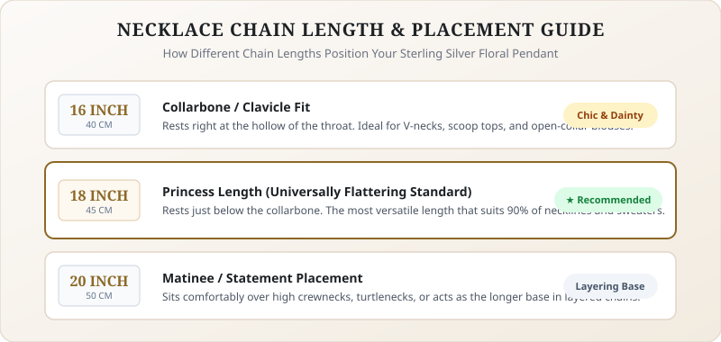
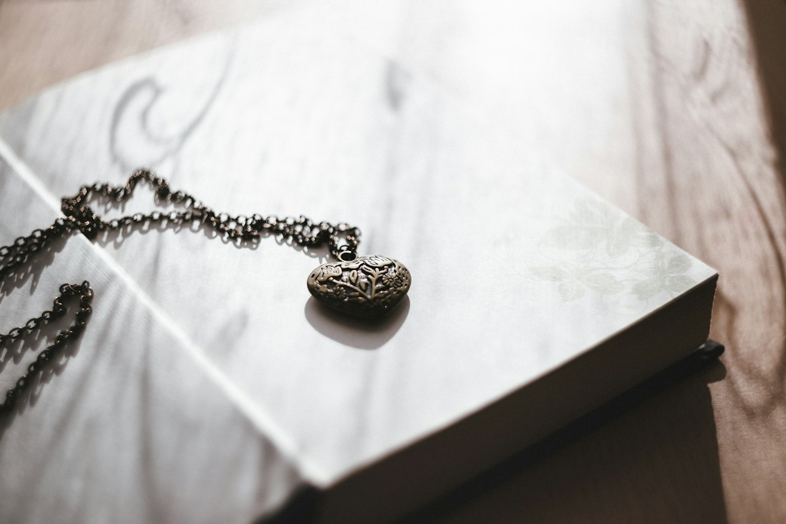

Few accessories capture timeless femininity quite like a graceful sterling silver floral necklace. Whether you are searching for an understated everyday signature, an unforgettable birthday milestone present, or a romantic keepsake to celebrate a fresh chapter in life, botanical motifs crafted in lustrous precious silver hold an enduring charm. Flowers remind us of renewal, quiet resilience, and natural harmony, while precious silver provides a cool, luminous canvas that flatters every skin tone and wardrobe palette.
Unlike fleeting jewelry fads that come and go with each passing season, nature-inspired jewelry has adorned women for centuries. From delicate cherry blossoms dancing along a collarbone to sculpted rose pendants and serene lotus blossoms, a fine silver flower pendant necklace bridges the gap between everyday casual wear and formal gala attire. In this complete guide, we will explore the history and artistry of silver floral jewelry, examine why genuine 925 silver is the premier metal choice, decode the hidden language of floral symbols, and share practical care secrets to keep your beloved piece shining for generations.
What Is a Sterling Silver Floral Necklace?

At its core, a sterling silver floral necklace is a piece of fine jewelry featuring a botanical pendant, charm, or station motif suspended from a matching silver chain. These designs draw inspiration directly from the natural world, capturing the delicate curves of petals, leaves, buds, and blooming vines in solid precious metal.
Silversmiths create these organic silhouettes through various artisanal techniques. Pendants are crafted through precision lost-wax casting, which captures lifelike petal veining and three-dimensional depth, or through filigree wirework where fine threads of silver form lace-like blossom crowns. Many contemporary designs also incorporate satin brushing or diamond engraving to give each petal lifelike dimension.
Whether styled as a minimalist single-blossom pendant or a layered medallion, a well-crafted silver floral necklace serves as a wearable tribute to nature's effortless artistry.
Why Choose Sterling Silver (925) for Jewelry

When choosing fine jewelry, the metal you select determines both its aesthetic longevity and your daily wearing comfort. Pure silver (99.9% fine silver) is naturally too soft and malleable to hold intricate, delicate petal prongs and daily chain tension without bending. To solve this, master metallurgists created sterling silver, an alloy composed of 92.5% pure silver strengthened with 7.5% copper or other durable alloy metals.
This exact ratio gives 925 silver necklace designs their renowned balance of tensile strength, heirloom durability, and peerless optical brightness. In fact, polished silver possesses the highest optical reflectivity of any precious metal, reflecting over 95% of visible light for a radiant, moonlight-like glow that yellow gold and platinum simply cannot replicate.
Furthermore, quality sterling silver is naturally a gentle, [INTERNAL LINK: hypoallergenic necklace] material. Because reputable jewelers craft genuine 925 silver without irritating nickel or lead, it is exceptionally skin-friendly for women with sensitive skin who experience itching or redness from cheaper base-metal costume jewelry.
Key Advantages of Sterling Silver
- Lasting Heirloom Value: A genuine precious metal that can be polished and restored indefinitely, unlike plated brass.
- Gentle on Sensitive Skin: Nickel-free composition prevents contact dermatitis and allergic skin reactions.
- Superb Reflectivity: Catches ambient daylight and candlelight with unmatched luminescence.
Popular Floral Designs and Their Meanings

Throughout history, flowers have communicated sentiment through floriography. Choosing a flower pendant necklace allows the wearer to carry a deeply personal sentiment close to her heart every day.

The Rose: Romance and Devotion
As the queen of florals, the rose symbolizes deep love, enduring passion, and timeless beauty. A silver rose pendant with sculpted petals offers a modern interpretation of traditional romance, making it a beloved anniversary keepsake.
The Lotus: Resilience and Rebirth
Rising unblemished through water to blossom in the morning sun, the sacred lotus represents spiritual growth and inner strength. Women embracing personal transformation often cherish the empowering serenity of a lotus silhouette.
The Cherry Blossom: Hope and Grace
Delicate five-petal cherry blossoms celebrate spring renewal and feminine grace. Its open silhouette makes it an effortlessly versatile daily accessory that pairs seamlessly with lightweight tops.
The Daisy: Joy and Friendship
With its sunny radiate petals, the daisy evokes carefree happiness and new beginnings. It is one of the most popular gift choices for sisters and close friends celebrating milestones.
The Sunflower: Warmth and Loyalty
Always turning toward the golden sun, a sunflower pendant stands for radiant positivity and steadfast devotion.
How to Style a Floral Necklace for Different Occasions

One of the greatest virtues of silver floral jewelry is its remarkable versatility. Unlike heavy formal jewels that spend months locked inside a safe, a floral pendant effortlessly transitions from busy morning school runs to candlelit dinner dates.
Everyday Casual Chic
For effortless daytime style, let your floral pendant sit right along the collarbone on a 16-inch or 18-inch cable chain. Pair it with a classic white crew-neck tee, a tailored blazer, or an oversized knit sweater. The cool silver tone adds an immediate touch of polish to relaxed denim without feeling overdressed.
Professional Office Wear
In boardroom and executive settings, jewelry should convey poise without causing distraction. A petite, minimalist floral pendant nestled inside an unbuttoned crisp silk shirt or boatneck blouse provides just the right amount of understated sophistication.
Layered Bohemian Elegance
Create a curated, modern jewelry look by layering your floral pendant with other complementary necklaces. Pair a 16-inch petite blossom pendant with an 18-inch simple chain and a 20-inch engraved silver locket. Staggering lengths and chain textures adds movement and personalized dimension to flowing summer sundresses.
Evening and Formal Events
For cocktail parties and black-tie galas, choose a three-dimensional floral pendant featuring sparkling cubic zirconia or natural gemstone accents. Complement your statement floral pendant with a layered fine silver choker chain or matching botanical bracelet to create an enchanting, harmonious jewelry suite.
Gift Ideas and Who It Suits

Finding a present that feels both deeply thoughtful and practically wearable can be a challenge. A carefully chosen floral pendant solves this dilemma effortlessly, making it an extraordinary gift for her regardless of age or personal fashion aesthetic.
- Birthdays and Milestones: Celebrate a 16th, 21st, 30th, or 50th birthday with a flower that matches the recipient's birth month or personal life journey.
- Mother's Day and New Mothers: Flowers represent nurturing love and maternal care. A pendant with multiple blossoms or an engraved initial flower petal makes an unforgettable token of gratitude for mothers and grandmothers.
- Bridal Parties and Bridesmaids: Thank your maid of honor and bridesmaids with matching silver floral necklaces that they can wear down the aisle and cherish long after the wedding reception ends.
- Graduations and New Beginnings: Mark academic achievements, relocations, or new career paths with a lotus or cherry blossom symbolizing personal blooming and promising horizons.
How to Care for and Clean Sterling Silver

A common question among jewelry lovers is whether genuine sterling silver tarnishes. The honest answer is yes: silver naturally reacts with airborne sulfur compounds over time, creating a thin surface patina. However, this is purely a surface reaction that does not harm the underlying precious metal, and it is easily reversed with proper care.
The Golden "Last On, First Off" Protocol
Chemicals found in everyday cosmetics, perfumes, hairsprays, and lotions accelerate oxidation. Make it a golden rule to put your necklace on as the final touch when getting dressed, and take it off first before washing your face, showering, or going to bed.
Gentle At-Home Cleaning Method
To restore brilliant shine without scratching the delicate petal surfaces, follow this safe silversmith-approved cleaning routine:
- Mix a few drops of mild, phosphate-free dish soap into a bowl of lukewarm water.
- Submerge your necklace for 3 to 5 minutes to loosen daily oils and dust.
- Use an ultra-soft baby toothbrush to gently clean recessed petal grooves and behind the pendant bail.
- Rinse thoroughly with clean lukewarm water and pat dry immediately with a lint-free cotton towel.
- Buff gently in back-and-forth motions using a specialized jewelry polishing cloth. Never rub in circles, as this can amplify micro-scratches.
For comprehensive tips on keeping all your heirloom treasures gleaming, explore our complete [INTERNAL LINK: silver care guide] covering humidity control and safe ultrasonic cleaning practices.
How to Spot Authentic 925 Silver

Learning how to verify authentic 925 silver ensures you invest in lasting value rather than disposable base metal.
Inspect the Quality Hallmark Stamp
Authentic sterling silver jewelry bears an official hallmark stamp. Look closely at the clasp, spring ring, or back of the pendant bail for marks such as "925", "STER", or "S925".
The Magnet Test
Precious silver is naturally non-magnetic. If a strong magnet snaps tightly to the pendant, the piece is likely crafted from iron or steel with a thin silver wash.
The Scent Test
Authentic silver has no perceptible odor. If a necklace smells strongly brassy or sour like a copper coin, it contains high base alloy concentrations and is not solid sterling silver.
Buying Tips Before You Purchase

Before investing in your next signature necklace or surprising someone special, keep these practical purchasing tips in mind to ensure complete satisfaction:
- Select the Ideal Chain Length: A 16-inch chain sits high near the clavicle (ideal for open collars), while an 18-inch chain is the universally flattering standard for most women. A 20-inch chain offers extra room for layering over turtlenecks.
- Check Bail Dimensions: Ensure the top loop (bail) of the flower pendant is sturdy and wide enough to glide smoothly across the chain without catching or binding.
- Examine Clasp Security: Look for a robust lobster claw clasp or well-tensioned spring ring that secures easily and stays fastened through active daily movement.
- Verify Return Policies and Warranty: Purchase from trusted boutique jewelers who stand behind their craftsmanship with clear hallmarks, secure packaging, and straightforward return guarantees.
Frequently Asked Questions

Can I wear my sterling silver floral necklace in the shower?
While fresh tap water alone will not damage solid silver, tap water frequently contains chlorine, minerals, and harsh sulfates found in body washes and shampoos that speed up tarnishing. Removing your necklace before showering helps preserve its pristine showroom polish much longer.
Is sterling silver hypoallergenic for everyday wear?
Yes. Genuine 925 sterling silver is predominantly pure silver combined with copper. High-quality silver jewelry is nickel-free and lead-free, making it an excellent, safe choice for individuals who suffer from metal allergies or sensitive skin.
What is the difference between silver-plated and solid sterling silver?
Silver-plated jewelry consists of an inexpensive base metal (such as brass or copper) coated in an extremely thin layer of silver that wears away over time, exposing the base metal beneath. Solid 925 sterling silver is a durable precious metal throughout that can be polished and cherished for a lifetime.
How should I store my silver floral necklace to prevent tarnish?
Store your necklace in a cool, dry place away from direct sunlight and humidity. An airtight zip-seal jewelry pouch or an anti-tarnish lined jewelry box is ideal. Adding a silica gel packet absorbs ambient moisture and keeps the silver bright for months between wears.
What does a floral necklace symbolize as a gift?
Giving a floral necklace symbolizes appreciation, enduring affection, and personal growth. Because blossoms bloom and flourish, gifting one sends a heartfelt message of renewal, happiness, and heartfelt admiration.
Embrace Nature's Timeless Grace
A delicate sterling silver floral necklace is far more than a decorative accessory; it is a wearable expression of beauty, resilience, and personal storytelling. Whether you are treating yourself to an everyday signature or gifting a loved one a blossom that will never fade, sterling silver offers the ideal combination of heirloom value, gentle comfort, and luminous elegance.
Explore our handcrafted boutique collections today to discover botanical jewelry that resonates with your spirit. Find your signature blossom and let your unique style bloom effortlessly every single day.